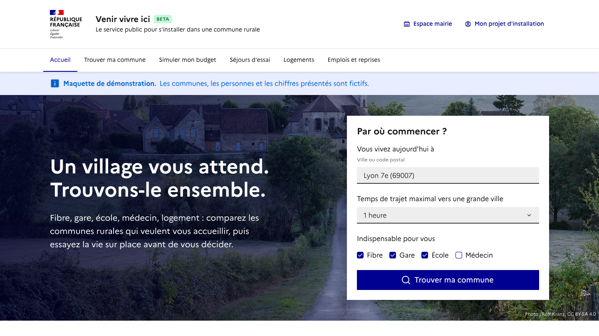
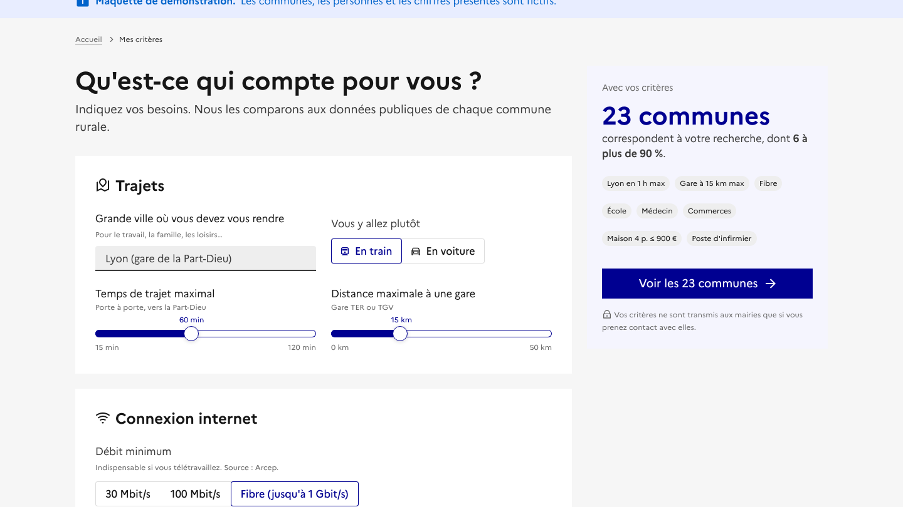
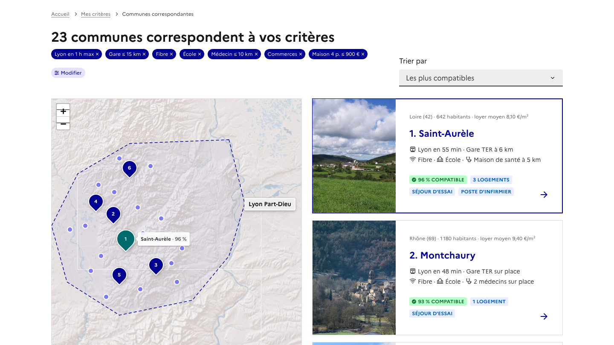
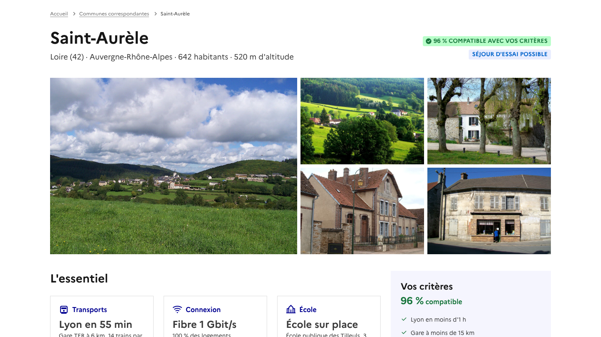
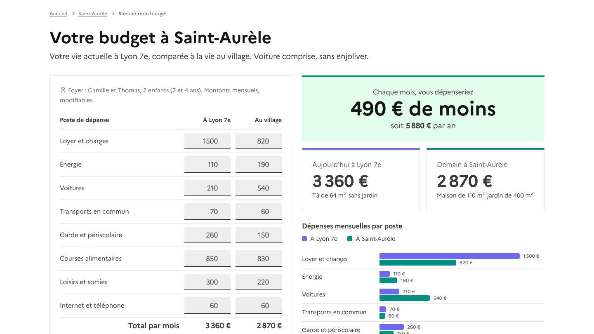
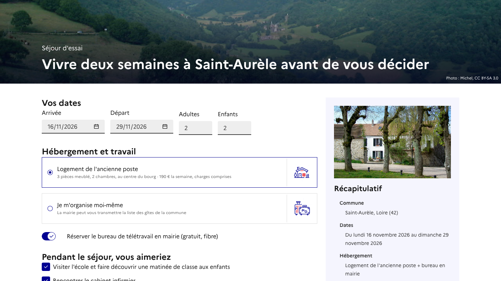
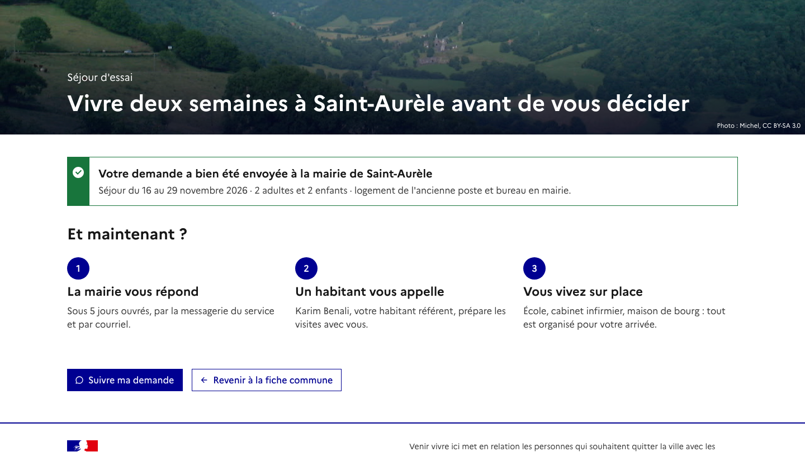
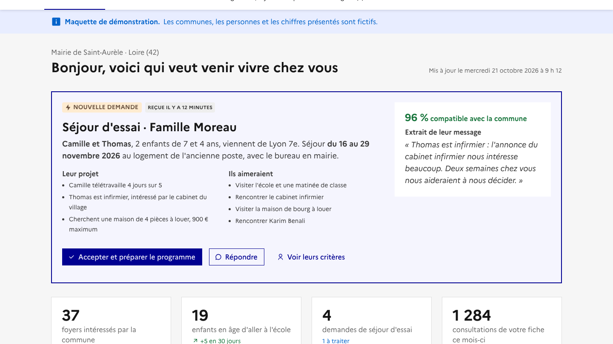

Parcours de démonstration
L'histoire de la famille Moreau et de la commune de Saint-Aurèle, en huit écrans.
1. La famille cherche
Camille et Thomas vivent à Lyon avec Léo et Jeanne. Le loyer pèse, l'appartement est trop petit. Ils se demandent où aller.
Écran 1 sur 8 · index.html

2. Ils disent ce qui compte
Lyon à moins d'une heure en train, la fibre, une école, un médecin, une maison à louer moins de 900 €, et un poste d'infirmier pour Thomas.
Écran 2 sur 8 · recherche.html

3. Ils découvrent les communes
23 communes rurales correspondent. En tête : Saint-Aurèle, compatible à 96 %.
Écran 3 sur 8 · resultats.html

4. Saint-Aurèle se présente
Données publiques calculées automatiquement, photos et mot de la maire : l'école, la gare, des maisons qui attendent des familles.
Écran 4 sur 8 · commune.html

5. Ils simulent leur budget
Voiture comprise, sans enjoliver : 490 € de moins chaque mois, et 46 m² de plus avec un jardin.
Écran 5 sur 8 · simulateur.html

6. Ils demandent un séjour d'essai
Deux semaines au village, dans le logement communal, avec un bureau en mairie, pour se faire leur avis.
Écran 6 sur 8 · sejour.html

7. La demande part
La mairie répond sous cinq jours, et un habitant arrivé de Lyon les appellera.
Écran 7 sur 8 · sejour.html?etat=envoye

8. La mairie les attend
Dans son tableau de bord, la maire voit leur demande, leurs critères, et un argument pour convaincre les propriétaires de logements vides.
Écran 8 sur 8 · mairie.html
